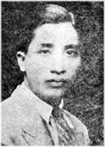

Chính tên là Lê Văn Bái. Sinh năm 1921 ở Yên Bái. Chánh quán: làng Nam Trực, phủ Nam Trực (Nam Định). Học trường Bảo hộ Hà Nội đến năm thứ ba rồi bỏ đi theo một bọn giang hồ mãi võ trót một năm. Sau về quê học chữ Hán. Năm 1935 đậu Thành chung, rồi vào ngạch thư ký toà sứ Bắc kỳ. Vì đau nặng nên được nghỉ phép dài hạn (Đã mất rồi. Lời chú lần in thứ hai).
Đã viết giúp: Ngọ báo, Loa, Tin văn, L'Annam Nouveau, Tiểu thuyết thứ bảy. Ích hữu, Việt Báo, Nam Cường (ký Thanh Tùng Tử và sau J. Leiba)

.
Thơ đăng báo Loa với một tên ký chẳng Việt nam tí nào, thế mà vừa ra đời Leiba liền được người ta thích.
Người ta thích những vần thơ có giọng Đường rõ rệt, mà lại nói được nỗi lòng riêng của người thời nay. Trong khuôn khổ xưa, cái hương vị mới ấy rất dễ say người. Thơ Leiba ra đời (1934) giữa lúc ai nấy đều cảm thấy mình như trẻ lại. Các nhà thơ đương thời, Thế Lữ, Đông Hồ, Thái Can, kẻ trước người sau, đều tả bằng người nét âu yếm nỗi lòng của người thiếu nữ lúc mới bén tình yêu. Nhưng không ai nói được đầy đủ như tác giả bài "Năm qua" người giai đoạn của một cuộc yêu đương nhóm lên từ hồi tóc còn xõa bỏ vai. Ít ai nói được như Leiba những vui buồn của người xuân nữ. Những câu như:
Hoa tặng vừa tàn bông thược dược,
Tìm chàng bỗng vắng, bóng chàng xa...
hay là:
Sầu đối gương loan, bóng lạ người,
Chàng không lại nữa, đẹp cùng ai?
có thể để ngang những câu tuyệt hay trong thơ cổ.
Hồi ấy là hồi đẹp nhất trong lời thơ Leiba. Về sau thơ Leiba không được hồn nhiên như thế nữa. Không rõ những gì đã đến trong đời thi nhân. Nhưng lời thơ như vương tí cặn của những đêm phóng túng. Hình như Leiba đã đau khổ nhiều lắm. Người tức tối lúc nghĩ đến nấm cỏ đương chờ mình:
Ví biết phù sinh đời có thế,
Thông minh, tài bộ, thế gia chi!
Học thành, danh đạt, chung quy hão:
Mắt nhắm, tay buông, giữ được gì?
Thà chọn sinh vào nhà ấu phụ,
Cục cằn, mất dạy, lại ngu si.
Leiba là một người bao giờ cũng có dáng điệu quí phái, ưa cái không khí quí phái, tin ở tài năng, ở dòng dõi mình, và rất tự trọng, cả trong những lúc buông tuồng. Một người như thế mà nói những lời như thế hẳn phải chán nản lắm.
Chán nản đưa người về tôn giáo. Thơ Leiba hồi sau có bài đượm mùi Phật, mặc dầu chưa đúng hẳn với tinh thần đạo Phật. Bài ''Bến giác'' [1] chẳng hạn có một giọng lạnh lùng, chua chát chưa phải là giọng của kẻ đã dứt hết trần duyên. Cho đến cái bình tĩnh của nàng Kiều khi ở trong am Giác Duyên lần thứ hai, Leiba cũng chưa có [2]. Tuy thế người gần đạo Phật hơn hết các nhà thơ bấy giờ.
Thơ Leiba đã thay đổi theo một hai điều thay đổi trong tâm trí thanh niên khoảng bảy tám năm nay. Xem thơ ta có thể thấy khi tỏ khi mờ hình ảnh của thời đại.
Octobre-1931
Chú thích:
[1] Trích theo đây
[2]Xin nhắc lại Kiều nói với Vương ông khi tái hợp:
Mùi thiền, đã bén muối dưa
Màu thiền, ăn mặc đã ưa nâu sồng.
Sự đời đã tắt lửa lòng.
Còn chen vào chốn bụi hồng làm chi!
NĂM QUA
Em nhớ năm em mới lên mười,
Tóc em buông xõa chấm ngang vai.
Ngây thơ nào biết em xinh đẹp,
Cùng trẻ bên đường đánh "chắt" chơi.
Anh đi qua đó đứng nhìn em,
Em vứt sành đi vội đứng lên,
Dắt tay cười nói thi nhau chạy,
Em vấp vào anh ngã xuống thềm.
Me em chạy lại bế em hôn,
Êm ái đe em sẽ đánh đòn.
Em phải nhịn đau không dám khóc,
Vì em trông thấy vẻ anh buồn...
...................
Em nhớ năm em lên mười hai,
Một mình em lấy trộm gương soi,
Đường ngôi đương kẻ thì anh đến,
Anh đến bên em mỉm miệng cười.
Em thẹn, quăng gương chạy xuống nhà,
Nín hơi anh gọi cũng không thưa.
Sau mành lấp ló em nhìn trộm,
Em đợi anh về mới dám ra...
..................
Em nhớ năm em lên mười lăm,
Cũng ngày đông cuối sắp sang xuân.
Mừng xuân em thấy tim hồi hô.p.
Nhìn cái xuân sang khác mỗi lần.
Ba mươi, em đứng ngắt hoa đào;
Nghỉ học anh về qua trước ao,
Ngẩng mặt vừa khi anh ngó thấy,
Ném hoa em vội chạy ngay vào.
Mồng hai anh lễ Tết nhà em,
Em đứng nhìn anh, nấp bóng rèm,
Mười sáu xuân rồi anh đã lớn;
Tìm em rầu rĩ vẻ anh nhìn.
Em thấy tim em đập rộn ràng,
Muốn ra lại ngại cháy tâm can.
Me em rót nước mời anh uống,
Anh tủi, em rầu, ai khổ hơn?
Năm ấy xuân em có một mình,
Ai vui em những ngẩn ngơ tình.
Này quân tam cúc năm xưa đó,
Nào lúc vui đùa, em với anh?
Mồng một, vui xuân hai chúng ta,
Em mười ba tuổi, tính còn thơ,
Em anh còn cãi nhau như trẻ,
Em dỗi, anh nhìn, dạ ngẩn ngơ...
Xuân nay xuân trước cách bao rồi!
Nhớ buổi xuân nào, tiếc phút vui.
Em ước đôi ta cùng bé lại:
Vui xuân lại được đánh bài chơi!
Ngày nay nhớ lại buổi vô tình,
Anh lặng yêu em, em nhớ anh.
Rồi nữa xuân qua, xuân lại lại
Biết rằng sau có vẹn ba sinh?
....................
Hôm qua em đến mái đông lân,
Cô gái khâu thêu vẻ ngại ngần.
Tơ lụa bộn bề quần áo cưới,
Vội vàng cho khách kịp ngày xuân.
Duyên mình hờ hững hộ duyên ai,
Cô gái đông lân đáng ngậm ngùi
Ngán nỗi năm năm đưa chỉ thắm,
Phòng không may áo cưới cho người!...
Anh ơi! Anh mãi đứng công danh,
Để phụ cho nhau một mối tình
Nhánh liễu vườn xuân, ai nấy chủ?
Chờ ai biết có khỏi trao cành?
Má đỏ, xuân em chỉ có thì,
Xuân qua, phó lẽ đợi anh về,
Tương tư lệ nhỏ phai màu phấn,
Anh hỡi! yêu nhau há đợi gì?
Danh lợi như mây nổi giữa trời;
Hồng nhan phải giống mãi trên đời?
Đợi anh áo gấm xuân sau lại,
Chỉ sợ nghiêng giành hốt quả mai!
(Loa)
MAI RỤNG
Nụ hồng rải lối, liễu tơ phai,
Vườn cũ rêu lan, cỏ mọc dài,
Bên gốc mai già, xuân vắng vẻ,
Âu sầu thiếu nữ khóc hoa mai...
Hoa mai đã tạ, lá mai vàng,
Vàng úa đầu cành, ủ bóng dương,
Lác đác mai già rơi mặt đất:
Hoa xưa thành quả, quả nay tàn!
Quả tàn héo rụng gốc cây khô;
Thiếu nữ âu sầu tưởng mộng xưa.
Vạch cỏ, ngậm ngùi nghiêng giỏ hốt;
Rạt rào hoa rụng cánh như mưa.
Giỏ chưa đầy quả, lệ chan sầu,
Vứt giỏ bên mình, kéo áo lau.
Gió đuổi hoa tàn bay xớn xác,
Má hồng sầu ủ, ủ làn thâu...
..."Năm xưa em ở chốn phòng khuê.
Yêu, nhớ, ngây thơ đã biết gì."
Mai nở, mai tàn, mai lại rụng,
Tường đông xuân sắc mặc đi về.
Tường đông, xuân ấy gặp tình lang,
Chàng nhủ cùng em nỗi nhớ thương.
Ngơ ngẩn em về, sầu chẳng mối:
Ngây thơ, em mới biết yêu chàng.
Yêu chàng, em cố chuốt hình dung
Tô cặp môi son, điểm má hồng,
Em thấy xuân nay hoa nở đẹp,
Cảm tình Thanh đế, tạ đông phong,
Vườn tình hoa ánh cánh song sa,
Rẽ liễu cùng chàng dựa bóng hoa.
Hoa tặng vừa tàn bông thược dược,
Tìm chàng bỗng vắng, bóng chàng xa...
Xuân tàn, hạ cỗi, cảnh thu sầu,
Mờ mịt hơi đông ám ngọn lau.
Xuân tới cành đào hoa lại nở,
Mong chàng mỏi mắt, thấy chàng đâu?
Gió xuân lại thổi chốn vườn xưa,
Lệ đẫm khăn là, dạ ngẩn ngơ.
Hoa cỏ thương người, xuân ủ bóng.
Đâu ngày xuân thắm buổi ngây thơ?
Sầu đối gương loan, bóng lạ người,
Chàng không lại nữa, đẹp cùng ai?
Bơ phờ tóc rối, vành khăn lệch,
Ủ rũ hoa gầy, má đỏ phai.
Phấn mốc, hương bay, chiếu lệch giường,
Song thưa, gió ném cánh hoa tàn.
Ba xuân những biếng thăm vườn cũ,
Trước cửa rêu dầy, lớp cỏ lan.
*
Phòng không chi tưởng cảnh xuân tình,
Nhánh liễu phai tơ rụng trước mành.
Chợt nghĩ vườn xuân, xuân sắp hết.
Gượng vui, khoác áo dạo hoa đình.
Xuân hết, đào phai, lý rụng rồi,
Hoa đình tịch mịch vẻ xuân phai.
Tơi bời ong bướm bay qua ngõ,
Những tưởng màu xuân ở xóm ngoài.
Xuân buồn như nhắc cảnh xuân vui
Gió thổi lay cành, rụng quả mai,
Thương dấu xuân tàn, nghiêng giỏ hót
Thương xuân, xuân hỡi, có thương người?
Lệ chan má phấn, ủ mày ngày.
Thấm thoát màu xuân có thế thôi
Cảnh cũng như người, chung hối hận:
Chàng không lại nữa, đẹp cùng ai?
....
Nụ hồng rải lối, liễu tơ phai,
Vườn cũ rêu lan, cỏ mọc dài,
Bên gốc mai già, xuân vắng vẻ.
Âu sầu thiễu nữ khóc hoa mai.
( Loa)
HOA BẠC MỆNH
Tháng ba, hoa bạc mệnh
Tàn trước mọi cành xuân
(Dịch thơ cổ)
Người đẹp vẫn thường hay chết yểu
Thi nhân đầu bạc sớm hơn ai
Ba xuân muôn thắm thêu cành biếc
Bạc mệnh hoa kia đã rụng rồi!
Héo trước trăm hoa: hoa bạc mệnh
Đang xuân, để khỏi thấy xuân tàn.
Chúa xuân vì biết tình hoa thế
Xin kiếp sau đừng nở thế gian.
Hồn kết gió hương trời Nhược thuỷ
Cánh viền mây thắm động Thiên Thai
Hoá thành những giọt mưa thơm ấy
Tưới nở trăm hoa đã héo rồi!
(Nam Cường, tập mới)
BẾN GIÁC
Phù thế đã nhiều duyên nghiệp quá!
Lệ lòng mong cạn chốn am Không
Cửa thiền một đóng duyên trần đứt
Quên hết người quen chốn bụi hồng.
(Nam Cường, tập mới)